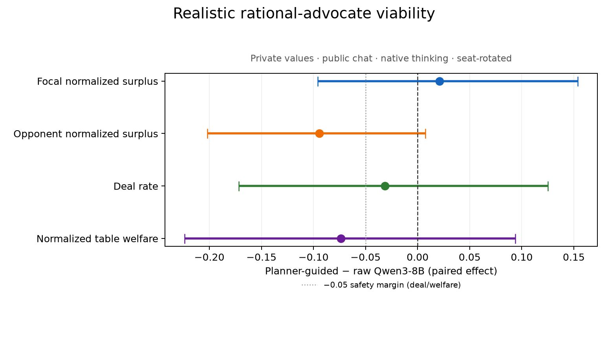

The advocate, judged on turns that happened
Note 0008 froze a design and a three-part gate for a question the programme keeps returning to: can a planner-guided advocate — a computable negotiator that optimizes one seat's captured surplus from that seat's own private sheet and the public record only — produce trajectories good enough to train on? Note 0009 ran it on thinking-ON Qwen3-8B at the protocol's 2,048-token per-turn cap and failed all three gates. This page is the same frozen design re-run with exactly one deviation: the cap raised to 32,768, which on this model cannot be reached without first overrunning the context window. Bank, seeds, cells, model, scaffold, arm, gates, bootstrap seed and analysis code are 0009's, unchanged. Methodology and full adjudication: research note 0054.
experiment-name column (advocate_v1_* versus advocate_v2_uncapped_*) is
what a consumer filters on.1. The censorship the rerun existed to remove, measured
One script (audit_empty_turns.py), the same signatures, over all six cells. A turn
is truncated when it stops at the cap, and empty after strip_think when the whole
budget was spent inside an unterminated <think> and the engine substituted a placeholder that
parses cleanly and passes every gate.
| vintage and cell | turns | truncated | empty after strip_think | non-action | generation failed | p99 tokens | max tokens |
|---|---|---|---|---|---|---|---|
| 0054 uncapped — raw baseline cap 32,768 | 196 | 0.000 | 0.000 | 0.015 | 0.000 | 6,329 | 6,634 |
| 0054 uncapped — guided seat 0 cap 32,768 | 226 | 0.000 | 0.000 | 0.040 | 0.000 | 6,475 | 6,912 |
| 0054 uncapped — guided seat 1 cap 32,768 | 252 | 0.000 | 0.000 | 0.044 | 0.000 | 6,885 | 7,798 |
| 0009 frozen cap — raw baseline cap 2,048 / 2,560 | 329 | 0.708 | 0.669 | 0.714 | 0.000 | 2,275 | 2,535 |
| 0009 frozen cap — guided seat 0 cap 2,048 / 2,560 | 365 | 0.737 | 0.715 | 0.737 | 0.000 | 2,382 | 2,419 |
| 0009 frozen cap — guided seat 1 cap 2,048 / 2,560 | 377 | 0.735 | 0.716 | 0.737 | 0.000 | 2,503 | 2,552 |
Roughly 71%–74% of every turn in the published 0009 corpus was a cap-destroyed placeholder, and uncapped it is 0.000 in all three cells. Generation failure is 0.000 in both vintages, so none of this was engine failure — it was budget burn. The longest turn produced anywhere in the 96 uncapped episodes is 7,798 tokens against the 32,768 ceiling, so the new cap is uncapped in effect rather than a new censoring threshold; and with the p99 above 6,000, the old cap was not clipping a thin tail, it was clipping the ordinary turn.
<think> satisfies “native reasoning persistence”
perfectly. Persistence and completion are orthogonal, and only one of them was being measured
— so a gate on the first certifies nothing about the second, and any thinking-ON open-weight cell run at
the frozen caps should be assumed censored at this rate until its own census says otherwise.2. The frozen gates, old vintage beside new
Preregistered in 0008 and unmodified for the rerun: the intervention is viable as an RL-example generator only if the focal-surplus interval's lower bound is above zero and neither the agreement-rate nor the welfare interval's lower bound falls below −0.05. Intervals are 95% bootstraps over the 16 hidden-score games with all of a game's episodes resampled together, at 10,000 draws.
| guided − raw, paired | 0054 uncapped | 0009 frozen cap | frozen gate |
|---|---|---|---|
| Focal normalized surplus | +0.021 [-0.096, +0.154] | -0.006 [-0.149, +0.135] | FAILlower bound > 0 |
| Agreement rate | -0.031 [-0.172, +0.125] | +0.000 [-0.203, +0.219] | FAILlower bound ≥ −0.05 |
| Normalized table welfare | -0.074 [-0.224, +0.094] | -0.008 [-0.231, +0.217] | FAILlower bound ≥ −0.05 |
| Opponent normalized surplus | -0.094 [-0.202, +0.007] | -0.001 [-0.105, +0.107] | descriptiveno gate — the safety constraint is on table welfare, and this row is what says whether a focal gain was taken from the other party |
All three gates fail again, and the primary point estimate changed sign without changing the verdict. Focal surplus moved from -0.006 [-0.149, +0.135] to +0.021 [-0.096, +0.154] — the direction the intervention wants — on an interval a quarter of the scale wide that contains zero comfortably. Reading a sign change off two point estimates whose intervals almost entirely overlap is exactly the error this programme has already made and withdrawn once, so no thinking-room effect on focal capture is claimed here; the claim is only that the estimate is now measured on turns that happened. By focal seat the effect is neither a seat artefact nor resolved either way:
| focal-surplus effect by seat | 0054 uncapped | 0009 frozen cap |
|---|---|---|
| focal seat 0 | +0.073 [-0.083, +0.248] | +0.006 [-0.252, +0.258] |
| focal seat 1 | -0.031 [-0.213, +0.158] | -0.019 [-0.135, +0.095] |
3. The unpreregistered result that matters most: the game itself changed
| 0054 uncapped | 0009 frozen cap | |||
|---|---|---|---|---|
| absolute level | raw | guided | raw | guided |
| agreement rate | 0.812 | 0.781 | 0.438 | 0.438 |
| focal normalized surplus | 0.422 | 0.442 | 0.227 | 0.221 |
| opponent normalized surplus | 0.422 | 0.327 | 0.227 | 0.226 |
| normalized table welfare | 0.843 | 0.770 | 0.454 | 0.446 |
Uncapping nearly doubled every absolute level in the game on the same bank, the same seeds and the same solver-verified hidden scores. Raw Qwen3-8B closes 81% of these negotiations when allowed to finish a thought and 44% when it is not. This reframes a conclusion 0009 drew from its own data: it read a 0.438 agreement rate as a hard negotiation environment in which guidance created 14 agreements and lost 14, but the uncapped corpus says most of those missed deals were not hard bargains — they were conversations in which one side said nothing. Episode length moves the same way and confirms it: 196 / 226 / 252 turns uncapped against 329 / 365 / 377 for the same 32 episodes per cell — fewer turns, far more said in each, and about twice the closure.
4. Extraction, not expansion — a signal 0009 could not see
| matched-pair mechanism | 0054 uncapped | 0009 frozen cap |
|---|---|---|
| pairs where both conditions closed | 43 | 14 |
| of those, focal up and opponent down (transfer) | 10 | 1 |
| of those, both parties improved (logrolling) | 0 | 0 |
| deals guidance created | 7 | 14 |
| deals guidance lost | 9 | 14 |
With 43 comparable deals instead of 14, the mechanism becomes legible, and it is transfer: opponent surplus falls by -0.094 [-0.202, +0.007] — a hair from resolving negative — while focal surplus rises by +0.021 [-0.096, +0.154]. 10 pairs are focal-up/opponent-down and 0 improve both sides, so the advocate's effect on a deal that closes either way is to move value across the table rather than to find the logroll — which is precisely why the welfare noninferiority gate fails while the focal estimate turns positive. This is descriptive, on 43 pairs, with no preregistration behind it: a hypothesis for the next design, not a result.
5. Hidden-preference recovery: still negligible
| hidden-preference recovery diagnostic | 0054 uncapped | 0009 frozen cap |
|---|---|---|
| opponent proposals observed by the focal final decision | 2.23 | 1.08 |
| issue-pairwise ranking accuracy | 0.466 | 0.448 |
| gain over the exact prior | +0.029 | +0.010 |
| posterior mass gain on the true top issue | +0.002 | +0.004 |
| reservation-threshold absolute error | 0.053 | 0.049 |
| threshold error reduction | -0.005 | -0.000 |
Uncapping doubled the evidence the planner gets (1.08 → 2.23 opponent proposals observed before the focal decision) because the negotiations actually progress, and it bought essentially nothing: ranking gain is +0.029 over the exact prior, top-issue mass gain is +0.002, and threshold error is still slightly worse than the prior. 0009's diagnosis stands and is now better supported: two public proposals do not identify a hidden type under this posterior, and the fix is an advocate that seeks information rather than one that waits for more of it.
6. Validity
| uncapped cell | episodes | turns | full native reasoning | planner-conditioned turns | per-turn cap | validator |
|---|---|---|---|---|---|---|
raw baselineadvocate_v2_uncapped_baseline | 32 | 196 | 196 (100%) | 0 | 32,768 | valid |
guided seat 0advocate_v2_uncapped_seat0 | 32 | 226 | 226 (100%) | 113 | 32,768 | valid |
guided seat 1advocate_v2_uncapped_seat1 | 32 | 252 | 252 (100%) | 128 | 32,768 | valid |
Every cell passed validate_advocate_run.py at exactly 32 done
episodes with 32 Markdown and 32 HTML transcripts, the frozen bank's 16 instance ids, seeds
[0, 1], exact model-conditioned views on every turn, and planner advice on exactly the focal
seat's turns and nowhere else. Syntax errors are zero in both arms; the guided arm carries
1 economic error out of its guided turns, recorded
in episodes.csv rather than screened out. Fabrication is 0.000 throughout.
The forest plot

Matched pairs you can read
The pairs below are the largest-effect matched comparisons: the same game, the same seed, the same focal seat, with and without the planner, rendered side by side with the first behavioural divergence marked and both trajectories on one shared frontier. They are a curated handful — the full 96-episode corpus with all 64 comparisons and every transcript is on Hugging Face, because the published site has a size ceiling this page respects.
| matched pair (guided vs raw, same game and seed) | focal Δ | opponent Δ | welfare Δ | deal |
|---|---|---|---|---|
seat 0 — 5646c8be3d seed 0raw 998da0647e vs guided fdaf1b3e0a | +1.000 | +0.219 | +1.219 | 0 → 1 |
seat 1 — 2d5d5b106e seed 0raw a5193ebca5 vs guided 24299c8e1a | +0.000 | -1.000 | -1.000 | 1 → 0 |
seat 1 — 2d5d5b106e seed 1raw d9429c7a6a vs guided da9b02f17d | +0.000 | -1.000 | -1.000 | 1 → 0 |
seat 0 — eddb2da273 seed 1raw 05e77bb5c8 vs guided 703e963e93 | -0.062 | -1.000 | -1.062 | 1 → 0 |
seat 1 — ce3bfa6570 seed 1raw d329d730a6 vs guided 82dc0583a6 | -1.000 | +0.000 | -1.000 | 1 → 0 |
seat 0 — 90316f9784 seed 0raw 980772b988 vs guided 52f9fedc5b | -1.000 | -0.045 | -1.045 | 1 → 0 |
seat 1 — 4abed256fd seed 1raw 70f94b0da4 vs guided df8df54a50 | -1.000 | -0.103 | -1.103 | 1 → 0 |
seat 0 — 119dfa1112 seed 0raw 5ab169b34d vs guided e03917b208 | -1.000 | -0.269 | -1.269 | 1 → 0 |
The same game at both caps
The most direct look at what the cap did: the raw baseline against itself, frozen-cap vintage on the left and uncapped on the right, paired on game, seed and arm so the cap is the only thing that differs. The censored turns are on the left, and they are readable as such — the turn's prompt-audit panel shows its reasoning stopping mid-sentence with raw_truncated set, and the message it published is the engine's placeholder, “ran out of time this turn and says nothing substantive”. Pairing here is across vintages for inspection only; no figure on this page is computed over the two together.
- scorable_negotiation-moves_chat-03570721bb--scorable_negotiation-moves_chat-70f94b0da4
- scorable_negotiation-moves_chat-2026b2b09e--scorable_negotiation-moves_chat-36151de7e5
- scorable_negotiation-moves_chat-312639eaa0--scorable_negotiation-moves_chat-9bd8883391
- scorable_negotiation-moves_chat-4193b51a73--scorable_negotiation-moves_chat-d9429c7a6a